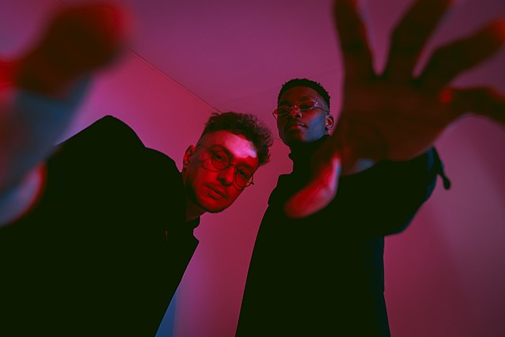

History
Music videos
Youtube
Click to call
Tvorchi
TVORCHI — are a Ukrainian electronic music band from Ternopil formed in 2018 by sound producer Andrew Hutsuliak and vocalist Jeffery Augustus Kenny. They have three studio albums: The parts, Disco lights and 13 Waves. The band performs songs in Ukrainian and English.
